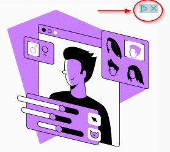
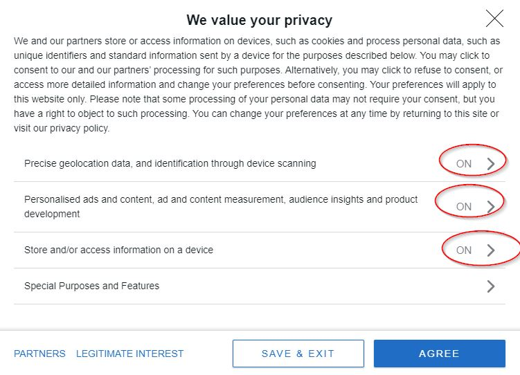
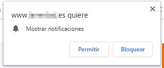
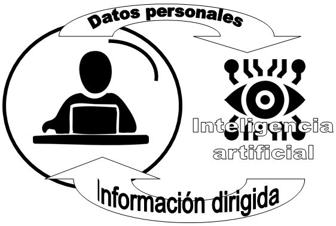

Buenas prácticas buscando en Internet
Los primeros resultados de un navegador no siempre son los mejores
Si te fijas en esta búsqueda:
- Nos muesta anuncios de su guia de compras
- El primer resultado (y a veces el 2º, 3º..) son anuncios
- Este resultado se repite en el anterior punto 2
- Este resultado ya empieza a ser bueno
P: ¿Qué hay en otros resultados? R: Casi nadie lo ve. Ese es el problema, por lo tanto las empresas pagan fortunas para mejorar sus rankings
Si quieres esconder un cadáver, a hazlo en la segunda página de Google.
Rocio Garcia Algora autora del curso Posicionamiento SEO de Aulargón
¿Por qué siempre usamos el mismo navegador?
Por costumbre y por imposición de que se nos instala navegadores (Chrome, Internet Explorer...) y buscadores por defecto (Google, Bing, ...)
Utilizan estrategias agresivas para que uses sus productos
¿Por qué tienen tanto interés?
Por dinero, por supuesto, cada consulta crea unos 0.005€ de beneficio ¿¿muy poco?? ¡¡ pero si son billones de € !!!

¿Hay otros buscadores?
DuckDuckGo https://duckduckgo.com

Es nuestro favorito, porque respeta los principios de software libre:
- No vende nuestros datos a terceros
- Bloquea rastreadores publicitarios
- Tienen siempre el control de tus datos
- Historial de busqueda siempre en privado
- No los pasa los datos a terceros.
- El motor de búsqueda es algo híbrido, tiene su propia araña web pero también utiliza Yahoo.
Si hacemos la búsqueda que hicimos de Google
- Anuncio, de algo tienen que vivir ¿no?
- Otro anuncio
- Ya empieza con buenos resultados.
Ecosia https://www.ecosia.org/

Destina el 80% de los beneficios en plantar árboles. La desventaja es que usa el motor de búsqueda de Bing.
LILO https://search.lilo.org/

El 50% lo dona a proyectos. Tú puedes decidir a qué proyectos quieres ayudar
Cambiar de buscador
Si quieres que tu navegador utilice esos buscadores por defecto, tienes que hacerlo manualmente. Aquí cómo hacerlo por ejemplo con Ecosia o las mismas páginas DuckDuckGo, Ecosia, Lilo... tienen buenos tutoriales)
No envíes correos pesados o masivos
Si tienes que adjuntar ficheros pesados, utiliza formatos de compresión apropiados (pdf, rar..) o mejor, utiliza repositorios en la web (Dropbox, Drive, OneDrive...) y manda símplemente los enlaces, ayudarás a que no se llene la bandeja de entrada de los destinatarios.
Si tienes que enviar correos masivos, utiliza herramientas de combinación y de diseño apropiados.
La publicidad
Tienes que saber detectar en el contenido de una página web cual es el contenido propio y cual es el contenido ajeno o publicidad.
Algunas veces el contenido publicitario está muy camuflado con el de la página web que es difícil verlo. Por ejemplo, en una página de iconos para redes sociales, encontré esta imagen. No es un icono de la página, es un anuncio, y se identifica por el símbolo de Adwords la filial de Google encargado de la publicidad y principal fuente de ingresos de la compañía.

Las cookies
No son virus, no son spam ... pero son archivos de texto que se descargan automáticamente cuando visitas una página y guardan tu preferencia.
Son los responsables de que la próxima vez que visites esa página web, se muestre aspecto y contenido personalizado o que vuelves a entrar sin usuario y contraseña. Son las cookies propias
Hay también cookies de terceros que pueden instalar las RRSS (por ejemplo la página tiene un "me gusta" de Facebook por lo tanto tiene una cookie de Facebook para que ese "me gusta" esté ligado a tu cuenta y además registrar lo que te gusta) o empresas publicitarias (para poner anuncios adaptados a tus gustos e intereses).
¿Ayuda o intrusión? Es un debate que no vamos a entrar. La normativa Europea exige desde 26/5/12 que los usuarios acepten o no los usos de las cookies. Pero la realidad es que los diálogos de aceptación están diseñados para que el usuario lo tenga dificil no aceptar las cookies. En este ejemplo, hay que ir opción por opción diciendo que NO 😣, y si vuelves a visitar la página, vuelve a preguntarlo !!! Al final las aceptas y cedes 😥

Y sin comentarios las prácticas agresivas como ésta:

Existen programas bloqueadores pero no lo recomendamos pues a veces bloquean funciones de páginas sin ese propósito.
Consecuencia de las cookies: Información dirigida
Busca un país X, y luego navega por otras páginas, te aparecerá ofertas de vuelos a X, hoteles en X, las 10 cosas más interesantes a visitar en X, mira un vídeo de Youtube y después te sugiere vídeos sobre X ... parece inofensivo pero a veces no lo es.
Por ejemplo, busco algo de bricolage, y me aparece anuncios de colonias de hombre, busco moda, y me aparece de mujer. Luchamos por una educación no sexista pero los medios de comunicación y en este caso Internet necesitan más control control, pues los errores que aparecen son graves y tienen mucha más influencia en nuestros jóvenes que la que reciben de los centros educativos.

Manipulación y radicalización de la sociedad.
La mayoría de las páginas dependen de su publicidad por lo tanto utilizan algoritmos de inteligencia artificial ( que a veces se les ha ido de las manos ) con el único propósito de que estés el máximo de tiempo en esa web : Juegan con tus emociones, te muestran mensajes políticos hiperpartidistas y crean provocaciones (con bulos y fake news incluidos).
Si sigues, pinchas, likeas... una información de un partido político Y del color Z, te aparecerán más noticias afines a Y dentro del ambiente Z. Un periódico digital te mostrará más noticias de ese color Z, las redes sociales te sugerirán que sigas a personas con el mismo color Z, y te mostrarán eventos o sucesos del color Z... que tú pincharas, difundirás y alimentarás lo que se llama burbuja informativa o filter bubble y vivimos en la era del Big Data.
Imagen de Merry Christmas en Pixabay
Tenemos que educar a nuestro alumnado de estos peligro y de como Pinchar tu burbuja ¿Cómo? Consume información contraria a tu ideología esto engañará a los scripts de las páginas que sueles visitar, además que te ayudará a tu visión de la realidad:
"Una de las motivaciones de los muy interesados en política es dominar todos los argumentos posibles para rebatir opiniones contrarias", "Consumir información contraria a su ideología les permite, primero, estar más preparados para defender sus posiciones, y segundo, convencerse todavía más de que son las acertadas" Silvia Majó Vázquez, investigadora de la Universidad de Oxford.
Te recomiendo ver este vídeo. Ponte los subtítulos si tienes problemas para seguirlo en Inglés.

Ciudadanía digital por Alfabetizacion: INTEF www.http://aprende.intef.es/ y Seguridad : Javier Quintana [CATEDU] bajo licencia Creative Commons Reconocimiento-NoComercial-CompartirIgual 4.0 Internacional License.